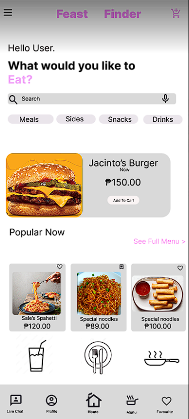

Desktop App / UIFeast Finder — Food Application System
Worked with a team to design and develop a desktop-based ordering system for managing customer purchases.
- Categorized food menu search (Meals, Sides, Snacks, Drinks) with real-time price updates.
- Interactive cart management, order checkout, and promo banner system.
- Customer live chat interface and saved favorite items tracking.
Desktop System
UI/UX Design
Database Management
Team Collaboration